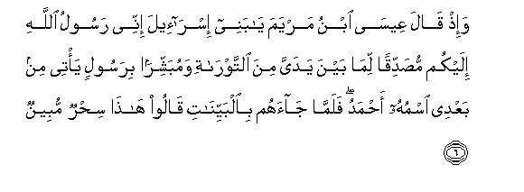
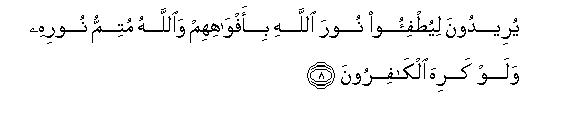

Sacred Texts Islam Index
Hypertext Qur'an Unicode Palmer Pickthall Yusuf Ali English Rodwell
Sūra LXI.: Ṣaff, or Battle Array. Index
Previous Next

The Holy Quran, tr. by Yusuf Ali, [1934], at sacred-texts.com
Sūra LXI.: Ṣaff, or Battle Array.
Section 1
1. Sabbaha lillahi ma fee alssamawati wama fee al-ardi wahuwa alAAazeezu alhakeemu
1. Whatever is
In the heavens and
On earth, let it declare
The Praises and Glory
Of God: for He is
The Exalted in Might,
The Wise.
2. Ya ayyuha allatheena amanoo lima taqooloona ma la tafAAaloona
2. O ye who believe!
Why say ye that
Which ye do not?
3. Kabura maqtan AAinda Allahi an taqooloo ma la tafAAaloona
3. Grievously odious is it
In the sight of God
That ye say that
Which ye do not.
4. Inna Allaha yuhibbu allatheena yuqatiloona fee sabeelihi saffan kaannahum bunyanun marsoosun
4. Truly God loves those
Who fight in His Cause
In battle array, as if
They were a solid
Cemented structure.
5. Wa-ith qala moosa liqawmihi ya qawmi lima tu/thoonanee waqad taAAlamoona annee rasoolu Allahi ilaykum falamma zaghoo azagha Allahu quloobahum waAllahu la yahdee alqawma alfasiqeena
5. And remember, Moses said
To his people: "O my people!
Why do ye vex and insult
Me, though ye know
That I am the apostle
Of God (sent) to you?"
Then when they went wrong,
God let their hearts go wrong.
For God guides not those
Who are rebellious transgressors.

6. Wa-ith qala AAeesa ibnu maryama ya banee isra-eela innee rasoolu Allahi ilaykum musaddiqan lima bayna yadayya mina alttawrati wamubashshiran birasoolin ya/tee min baAAdee ismuhu ahmadu falamma jaahum bialbayyinati qaloo hatha sihrun mubeenun
6. And remember, Jesus,
The son of Mary, said:
"O Children of Israel!
I am the apostle of God
(Sent) to you, confirming
The Law (which came)
Before me, and giving
Glad Tidings of an Apostle
To come after me,
Whose name shall be Aḥmad."
But when he came to them
With Clear Signs,
They said, "This is
Evident sorcery!"
7. Waman athlamu mimmani iftara AAala Allahi alkathiba wahuwa yudAAa ila al-islami waAllahu la yahdee alqawma alththalimeena
7. Who doth greater wrong
Than one who invents
Falsehood against God,
Even as he is being invited
To Islām? And God
Guides not those
Who do wrong.

8. Yureedoona liyutfi-oo noora Allahi bi-afwahihim waAllahu mutimmu noorihi walaw kariha alkafiroona
8. Their intention is
To extinguish God's Light
(By blowing) with their mouths:
But God will complete
(The revelation of) His Light,
Even though the Unbelievers
May detest (it).
9. Huwa allathee arsala rasoolahu bialhuda wadeeni alhaqqi liyuthhirahu AAala alddeeni kullihi walaw kariha almushrikoona
9. It is He Who has sent
His Apostle with Guidance
And the Religion of Truth,
That he may proclaim it
Over all religion,
Even though the Pagans
May detest (it).